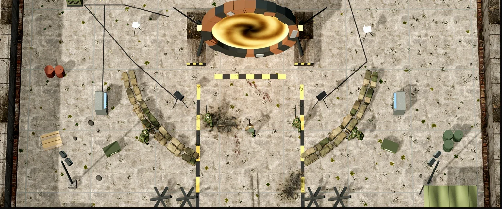

Die Geschichte von Zombiehölle
Im Jahr 2044 öffnet Projekt TIEFENLICHT in der Versuchsanlage Kesselgrund Durchgänge in eine andere Welt. Funksprüche nennen sie Kaldra.
Kaldra ist schon verloren. Die Seuche hat dort fast alles Leben verwandelt, lange bevor der erste Durchgang aufging. Mit den Durchgängen kommt sie zu uns. Das Militär riegelt die Portale ab und schweigt.
Die zwei Lager
Die Wächter
Sie halten die Portale halb geschlossen, dann leuchtet ein Portal golden. Sie warnen uns und brauchen etwas aus unserer Welt, um die Durchgänge zu versiegeln.
Die Lenker
Sie steuern die Infizierten und schicken Horden. Bevor eine Horde kommt, pulsiert das Portal rot.
Wie es dazu kam
Von einem Labor in Norwegen bis zur Nacht, in der sich die Risse öffneten.
-
Tromsø · 2031
Im Labor der Universität Tromsø misst der Physiker Dr. Eirik Halvorsen etwas, das es nicht geben dürfte. Für Bruchteile einer Sekunde verschwindet Licht zwischen zwei Magnetspulen und kommt nicht zurück.
-
Kesselgrund · 2041
Das Tor bleibt jetzt minutenlang offen. Sonden fahren hindurch und senden Bilder von fremden Welten. Das Militär übernimmt die Aufsicht. Aus dem Stromspeicher-Projekt wird Projekt TIEFENLICHT, streng geheim.
-
Kesselgrund · 14. März 2044 · 03:12 Uhr
TIEFENLICHT fährt auf volle Leistung. Die Messwerte springen über jede Grenze, dann bricht die Verbindung zur Leitstelle ab. Noch in derselben Nacht öffnen sich an vielen Orten Risse in der Luft.
-
Heute
Ob der Unfall in Kesselgrund wirklich ein Unfall war, weiß niemand. Das Militär weiß mehr, als es sagt. Über einen versiegelten Lagebericht vom 14. März 2044 spricht niemand. Und nicht jedes Signal der Wächter ist echt.
-
Für dich zählt erst einmal nur, dass du überlebst.
Jetzt spielen